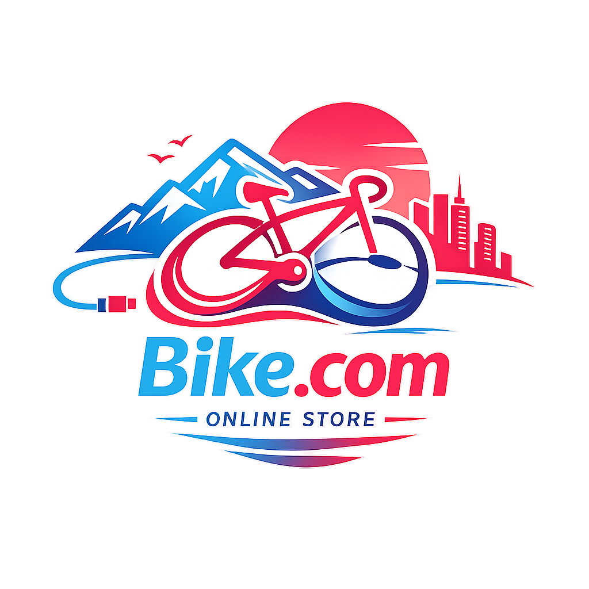
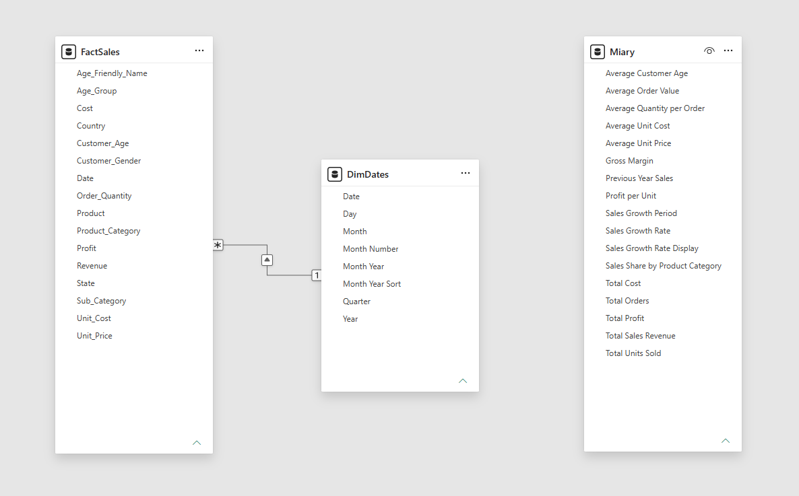

Bike Store | Sales Analysis
Analiza sprzedaży, transakcji i rentowności produktów.
Sales, transaction patterns and product profitability.
Najważniejsze liczby
Key figures
Galeria raportu
Report gallery
Wybierz stronę i kliknij obraz, aby go powiększyć. To statyczne zrzuty ekranu, nie raport z aktywnymi filtrami.
Choose a page and click the image to enlarge it. These are static screenshots, not a live filterable report.
Cele biznesowe i dane
Business objectives & data
Ocena przychodów, zysku, dynamiki sprzedaży, struktury zamówień i marż. Dane transakcyjne obejmują produkty, geografię, atrybuty klientów, ilości i wartości finansowe.
Evaluate revenue, profit, sales growth, order patterns and margins. Transaction records include products, geography, customer attributes, quantities and financial values.
Przygotowanie i model danych
Data preparation & modelling
Standaryzacja grup wiekowych, kontrola typów i braków, ciągły kalendarz (2039 dat), relacja 1:* oraz osobna tabela miar DAX. Model celowo uproszczony.
Standardised age groups, checked types and blanks, built a continuous calendar (2,039 dates), a 1:* relationship and a dedicated DAX measures table. The model is intentionally simple.

Wnioski i ograniczenia
Insights & limitations
Rowery generują ok. 61 mln USD przychodów. USA są największym rynkiem pod względem przychodów. Akcesoria osiągają ok. 59% marży brutto w prezentowanych latach.
Bikes generate roughly $61M in revenue. The US is the largest market by revenue. Accessories achieve around 59% gross margin in the displayed years.
Brak Customer_ID uniemożliwia liczenie unikalnych klientów. Przyjęto jeden wiersz jako jedno zamówienie. Dane kończą się 31 lipca 2016 r.
No Customer_ID is available, so unique customers cannot be counted. One row is assumed to represent one order. Data ends on 31 July 2016.